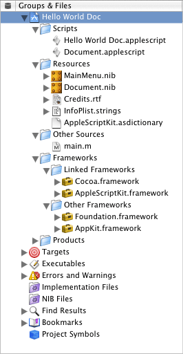

Document Suite
This chapter describes the terminology in AppleScript Studio’s Document suite, available starting in AppleScript Studio version 1.2.
The Document suite defines AppleScript Studio’s version of the document class, which takes the place of the one defined in Cocoa’s Standard suite (described in “Terminology Supplied by the Cocoa Application Framework”).
The Document suite makes it easier to create document-based applications. It defines a pair of high-level event handlers (data representation and load data representation) and a pair of low-level handlers (read from file and write to file). In addition, the window class now has a document element to provide access to a document from within the user interface.
Xcode provides the AppleScript Document-based Application project template for applications that create and manage multiple documents. To support the Document suite, the settings for this project template were revised. The project’s Document.applescript script file now includes empty versions of the data
representation and load
data representation event handlers. The Task List sample application (available with AppleScript Studio version 1.2) demonstrates how to read and write simple files with these high-level handlers. The Plain Text Editor sample application (also available starting with version 1.2) demonstrates how to read and write slightly more complex text files with the low-level handlers (read from file and write
to file).
Whichever handlers you use, the great advantage of AppleScript Studio’s document support is that your application doesn’t need to do any of the work to put up the Open, Save, or Save as panels, or even to worry about the filenames chosen by the user. For the high-level handlers, it just reads or writes its data when the appropriate handler is called. For the low-level handlers, it uses the filename that is passed to the handler.
Terminology
The classes and events in the Document suite are described in the following sections:
For enumerated constants, see “Enumerations.”
Classes
The Document suite contains the following classes:
Represents data displayed in windows that can typically be read from and written to files.
The Cocoa application framework provides a great deal of basic document support and, starting with AppleScript Studio version 1.2, you can take advantage of much of that support in AppleScript Studio document-based applications. For example, if you create a new AppleScript Document-based Application project in Xcode, without making any changes, the application can open multiple untitled windows and even save them, though without any application data.
Figure 6-1 shows the Groups & Files list for a new document-based project (named DefaultDocumentProject), with several groups expanded. Many of the items are common to all AppleScript Studio project templates, and are described in AppleScript Studio Programming Guide (see “See Also” for information on that document). The following is a description of the default items that are unique to a document-based project:
Document.applescriptis the default document script file. Starting with AppleScript Studio version 1.2, this file contains minimaldata representationandload data representationhandlers. You will have to fill in these handlers to supply data for saving to a document and to load data that has been read from a document.If you have other document-related script statements, you can add them to this file.
Document.nibis the nib file for creating document-associated windows. Nib files are described with theawake from nibcommand.Credits.rtfis a rich text format (.rtf) file that supplies text for the default About window in a Cocoa application. You edit this file to supply your own About window information.
The Cocoa.framework framework is listed in the Linked Frameworks group. Its target checkbox is checked, indicating it is part of the current target. The Headers group for Cocoa actually contains only one header file, Cocoa.h (not shown). That file imports the headers Foundation.h and AppKit.h, two files that in turn import all the header files for the two frameworks that make up Cocoa, AppKit.framework and Foundation.framework.
You can see in Figure 6-1 that the Other Frameworks group contains both AppKit.framework and Foundation.framework (this is true for all AppleScript Studio projects). These frameworks are listed in the Other Frameworks group to provide convenient, searchable access to header files that contain all the Cocoa classes, methods, and constants available to your AppleScript Studio application. Your application can make use of this information either in Objective-C or other code you write, or in application scripts that use the call method command.
The folders named Resources/English.lprog/Documentation in the AppKit and Foundation frameworks contain documentation for Cocoa. It’s the same documentation you can access by choosing Show Documentation Window in Xcode’s Help menu.
Figure 6-1 Default contents of the Groups & Files list in an AppleScript Document-based Application project
After creating a default document-based application project, you still have some significant work to do to take full advantage of AppleScript Studio’s document support. That work falls into the following main categories:
Adding user interface items to the document nib file.
Providing your data for writing to a file and extracting your data when reading from a file:
For simple documents, you can use the high-level handlers
data representationandload data representation.For more complex documents, you may want to use the low-level handlers,
write to fileandread from file, instead.
Supplying document type information in Xcode. You can use the Target editor to specify:
a named document type
associated extensions (such as
"txt")associated OS types (four-character codes, such as
"TEXT")whether the application can edit the file type, or just view it
an icon to associate with the document type
As a minimum for reading and writing files, you supply a document type and an extension, and specify that the application can edit the type.
Whether you use high-level or low-level handlers to read and write data, the great advantage of AppleScript Studio’s document support is that your application doesn’t need to do any of the work to put up the Open, Save, or Save as panels, or even to worry about the filenames chosen by the user. For the high-level handlers, it just reads or writes its data when the appropriate handler is called. For the low-level handlers, it uses the filename that is passed to the handler.
AppleScript Studio includes two sample applications, available starting with version 1.2, that demonstrate how to work with document-based applications. See the Examples section for more information.
Properties of document objects
In addition to the properties it inherits from the responder class, a document object has these properties:
Elements of document objects
A document object can contain the elements listed below. Your script can access most elements with any of the key forms described in “Standard Key Forms.” See the Version Notes section for this class for the AppleScript Studio version in which a particular element was added.
window | ||||
| Specify by: | “Standard Key Forms” | |||
the document’s windows; see Version Notes section below | ||||
Commands supported by document objects
Your script can send the following commands to a document object:
close (from Cocoa’s Standard suite) | ||||
print (from Cocoa’s Standard suite) | ||||
save (from Cocoa’s Standard suite) |
Events supported by document objects
A document object supports handlers that can respond to the following events:
Documentdata representation | ||||
load data representation | ||||
read from file | ||||
write to file |
Nib
awake from nib |
Examples
The Plain Text Editor sample application (distributed with AppleScript Studio, starting with version 1.2) demonstrates how to read and write simple text files with the low-level handlers read from file and write to file. The Examples sections for these handlers show the Plain Text Editor versions of these handlers. The Task List sample application (also available starting with version 1.2) demonstrates how to read and write simple files with the high-level handlers data representation and load data representation. The Examples sections for these handlers show the Task List versions of these handlers.
You can use statements like the following in Script Editor to access document properties in an AppleScript Studio document-based application. Similar statements will work within an AppleScript Studio application script (though you won’t need the tell application statement).
tell application "Document Application" |
set myName to name of the first document |
-- result: "Untitled 2" |
end |
Version Notes
The path property was added in AppleScript Studio version 1.3.
Prior to AppleScript Studio version 1.3, the file
type property was implemented with a four-character code that could cause terminology conflicts with other applications. Starting with version 1.3, file type is implemented with a different four-character code to avoid these possible conflicts. The file kind property was added for backward compatibility of existing scripts, but shouldn’t be used in scripts you write.
The following changes were made for AppleScript Studio version 1.2:
The
documentclass was moved from the Application suite to its own Document suite.The
file typeproperty was added.Support was added for the following events:
data representation,load data representation,read from file, andwrite to file.You can no longer connect a
will openhandler to a document. However, you can connect that handler to a document’s window (see the next item).The
windowelement was added to thedocumentclass to provide access to interface elements that are associated with the document. Note that becausewindowis an element (addressable by name, index, id, and so on), not a property, the statementwindow of document 1returns a list of 1 window ({window id 1}). That is,windowis synonymous withwindowsfor an element.Note also that the
documentelement was added to thewindowclass, so that for windows that have an associated document, user interface elements can access the document.
Events
Objects in the Document Suite support handlers for the following events (an event is an action, typically generated through interaction with an application’s user interface, that causes a handler for the appropriate object to be executed). You use these events with document objects.
Called when a document is about to be saved to supply the document’s data.
This handler is called as a result of a user opening the Save or Save as panels (or using the key equivalents) and choosing to save the document.
This is a high-level handler that you use when you want to create documents that are specific to your application. Your handler returns the document’s data in any form you choose, such as a simple string, a list, a record, or other type of data. The application doesn’t have to deal with opening a file and writing data—AppleScript Studio automatically saves the data in the document.
The counterpart to data representation is load data representation.
Syntax
data representation |
reference | required | |
of type |
Unicode text | required | |
Parameters
a reference to the object whose
data representationhandler is calledthe type (extension) of the document file
of type Unicode textExamples
The Task List sample application (distributed with AppleScript Studio, starting with version 1.2), provides the following handler to demonstrate the high-level mechanism for writing data to files. In this case, the handler gets information from the data source object for the table view that displays the task list. The information includes the list of tasks, the name of the current sort column, and the sort order of the current sort column. The handler returns that information, which is all the application needs to recreate the current window state, in a record.
on data representation theObject of type ofType |
-- Set up local variables |
set theWindow to window 1 of theObject |
set theDataSource to data source of table view "tasks" |
of scroll view "tasks" of theWindow |
set theTasks to contents of every data cell of every data row |
of theDataSource |
set theSortColumn to sort column of theDataSource |
-- Create a record containing the list of tasks (just a list of lists), |
-- the name of the sort column, and the sort order. |
set theDataRecord to {tasks:theTasks, |
sortColumnName:name of theSortColumn, |
sortColumnOrder:sort order of theSortColumn} |
return theDataRecord |
end data representation |
Version Notes
The data representation event handler was added in AppleScript Studio version 1.2.
The Task List sample application was added in AppleScript Studio version 1.2.
Called to load a document’s data when the document is opened.
This handler is called as a result of a user opening the Open panel and selecting one or more files to open, or of the user dragging an application document onto the application icon or double-clicking an application document icon. The data provided to this event handler is the same data that the application supplied in the data representation handler when the document was saved.
This is a high-level handler that you use for documents that are specific to your application. Your handler loads the supplied data in any form you choose (the same form in which it previously supplied the data in its data representation handler). The application doesn’t have to deal with opening a file and reading data—AppleScript Studio automatically supplies the data from the document.
The counterpart to load data representation is data
representation.
Syntax
load data representation |
reference | required | |
of type |
Unicode text | required | |
with data |
item | required | |
Parameters
a reference to the object whose
load data representationhandler is calledthe type (extension) of the document file
the data to loaded from the document
of type Unicode textwith data itemExamples
The Task List sample application (distributed with AppleScript Studio, starting with version 1.2), provides the following handler to demonstrate the high-level mechanism for reading data from files. The parameter theData refers to an object of the same type as the one that was saved by the data representation event handler—that is, a record that contains the list of tasks, the name of the current sort column, and the sort order of the current sort column. This handler extracts that information and inserts it into the data source object for the table view that displays the task list.
on load data representation theObject of type ofType with data theData |
-- Set up local variables |
set theWindow to window 1 of theObject |
set theDataSource to data source of table view "tasks" |
of scroll view "tasks" of theWindow |
-- Restore the sort column and sort order of the data source |
-- based on the information saved |
set sort column of theDataSource |
to data column (sortColumnName of theData) of theDataSource |
set sort order of sort column of theDataSource |
to (sortColumnOrder of theData) |
-- Use the "append" command to quickly populate the data source |
-- with the list of tasks |
append the theDataSource with (tasks of theData) |
-- Return true, signaling success. If you return "false", |
-- the document will fail to load and an alert will be presented. |
return true |
end load data representation |
Version Notes
The load data representation event handler was added in AppleScript Studio version 1.2.
The Task List sample application was added in AppleScript Studio version 1.2.
Called when the application needs to read a document’s data.
This handler is called as a result of a user opening the Open panel and selecting one or more files to open, or of the user dragging an application document onto the application icon or double-clicking an application document icon. The data in the document is the same data that was written by the write to file handler when the document was saved.
This is a low-level handler that you use to work with more complicated documents or documents other applications might read, such as text files. The handler is responsible for opening the file specified by the passed path name parameter and for closing it after reading is complete. The handler reads the supplied data according to the type supplied in the of
type parameter. See the write
to file handler for more information on document types.
The counterpart to read from file is write to file.
Syntax
read from file |
reference | required | |
of type |
Unicode text | required | |
path name |
Unicode text | required | |
Parameters
a reference to the object whose
read from filehandler is calledthe type (extension) of the file
the path name (in POSIX, or slash-delimited, format) of the file to read from
of type Unicode textpath name Unicode textExamples
The Plain Text Editor sample application (distributed with AppleScript Studio, starting with version 1.2) demonstrates how to read and write simple text files with the low-level handlers read from file and write to file, including opening and closing a document file.
Version Notes
The read from file event handler was added in AppleScript Studio version 1.2.
Called when the application needs to write a document’s data.
This handler is called as a result of a user opening the Save or Save as panels (or using the key equivalents) and choosing to save the document.
This is a low-level handler that you use to work with more complicated documents or documents other applications might read, such as text files. The handler is responsible for opening the file specified by the passed path name parameter and for closing it after writing. The handler writes the document’s data according to the type supplied in the of type parameter.
By default, the document type for an AppleScript Studio document-based application is set to “DocumentType”. You can change the document type for the active target in an Xcode project by modifying the Document Types section of the Target Editor. For example, in some versions of Xcode, Document Types is in the Simple View section in the Info.plist Entries section. You can also make changes to other document-related information, including specifying the Extensions and OS types. If you specify more than one document type, the application will get a pop-up in the Save panel (when saving the document), which allows a user to specify the document type to save as. The value chosen in the pop-up is the value passed in the of
type parameter.
The counterpart to write to file is read from file.
Syntax
write to file |
reference | required | |
of type |
Unicode text | required | |
path name |
Unicode text | required | |
Parameters
a reference to the object whose
write to filehandler is calledthe type (extension) of the file
the path name (in POSIX, or slash-delimited, format) of the file to write to
of type Unicode textpath name Unicode textExamples
The Plain Text Editor sample application (distributed with AppleScript Studio, starting with version 1.2) demonstrates how to read and write simple text files with the low-level handlers read from file and write to file.
Version Notes
The write to file event handler was added in AppleScript Studio version 1.2.
© 2007 Apple Inc. All Rights Reserved. (Last updated: 2007-10-31)